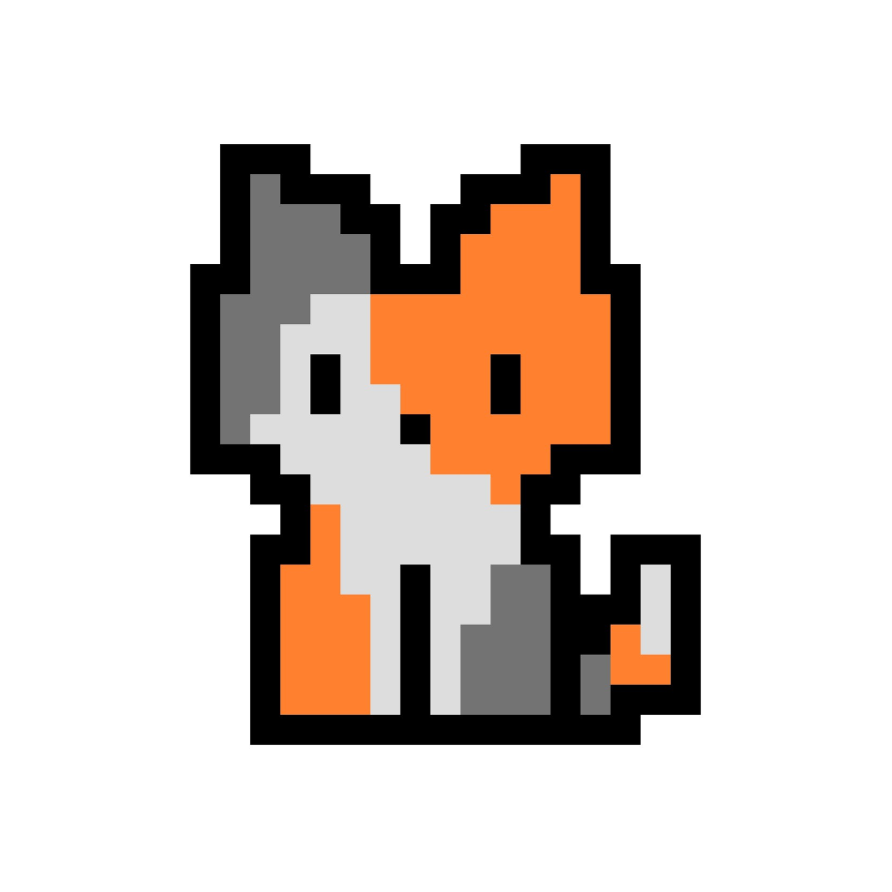

Riset yang jujur
Kami merujuk pada sumber terbuka dan mencantumkan tautannya, bukan mengklaim sebagai satu-satunya kebenaran.
✳TENTANG RUANGAKAR

RuangAkar adalah ruang belajar kecil tentang kearifan lokal Indonesia. Situs ini dibuat oleh dua orang yang percaya bahwa budaya bukan sekadar hafalan — ia adalah cara hidup yang terus dipraktikkan.
Kami membuat RuangAkar untuk merangkum cerita-cerita tentang kearifan lokal yang sering terdengar, tetapi belum tentu kita pahami. Mulai dari subak di Bali hingga noken dari Papua, setiap cerita menunjukkan bahwa pengetahuan lama masih relevan untuk menjawab persoalan hari ini.
Sebagian besar isi situs merujuk pada sumber terbuka, terutama UNESCO. Kami berusaha menulis ulang dengan bahasa sendiri, mencantumkan tautan sumber, dan membuka ruang untuk koreksi. Situs ini bukan ensiklopedia lengkap — ia adalah pintu masuk.
Kami merujuk pada sumber terbuka dan mencantumkan tautannya, bukan mengklaim sebagai satu-satunya kebenaran.
Cerita ditulis ulang dengan bahasa yang mudah dipahami, tanpa menghilangkan konteksnya.
Kearifan lokal punya banyak versi dan penjaga. Jika ada yang perlu diperbaiki, kami ingin tahu.